Музей Dendy от Steepler / Консоли Micro Genius
В декабре 1992 года в газете "Коммерсантъ" вышла заметка, в которой сообщалось следующее:
"Steepler заключила долгосрочный контракт с тайваньской фирмой, название которой не разглашается. По этому контракту тайваньская фирма будет производить специально для Steepler видеоигры по собственной запатентованной технологии. Видеоигры, а также другие аксессуары и сопутствующие товары будут продаваться на российском рынке под торговой маркой Dendy, которую Steepler зарегистрировала специально для своего нового бизнеса."
Газета «Коммерсантъ», №064(217), 18.12.92
Теперь уже не секрет, что этой тайваньской фирмой была TXC Corporation, выпускавшая с конца восьмидесятых до середины девяностых фамиклоны под собственной маркой "Micro Genius". Приставки этой фирмы были одними из самых популярных на Тайване и получили широкое распространение по всему миру - их продавали в Азии, Латинской Америке, Южной Африке и даже некоторых странах Европы, где Nintendo не имела своего представительства.
Моделью, послужившей прототипом первой стиплеровской приставки, стала наиболее популярная в то время IQ-501. Заменив логотип Micro Genius на коробке на свой, Steepler начала успешно продавать новоиспеченный Dendy Classic на российском рынке.
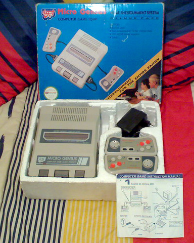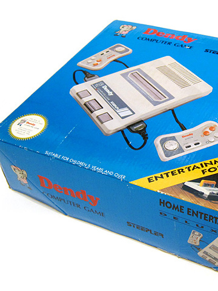Стоит также отметить, что в других странах упаковка могла выглядеть иначе:
IQ-501 из Италии
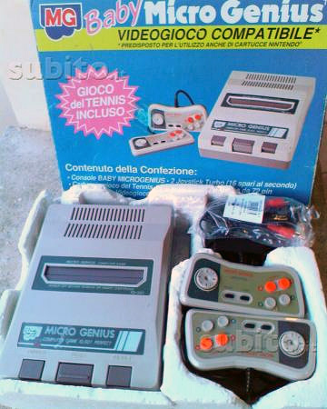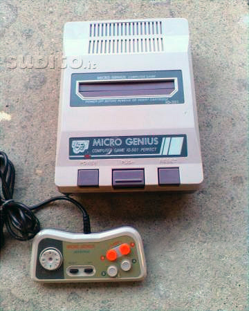
IQ-501 из Бразилии
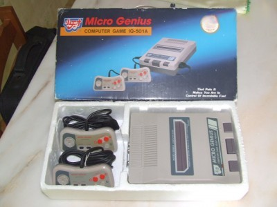
еще фото
 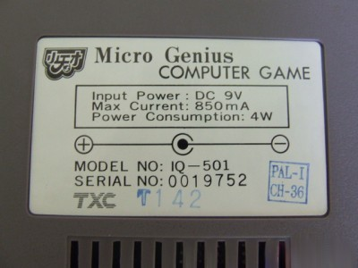
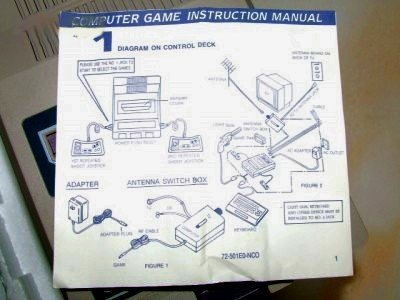
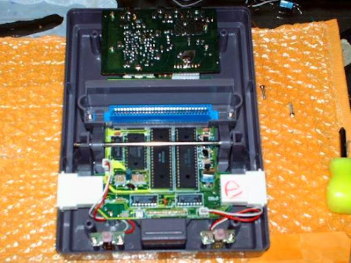
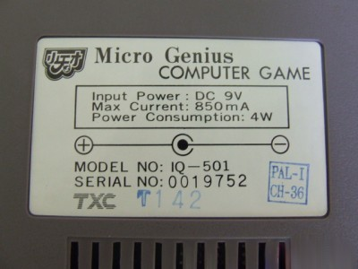
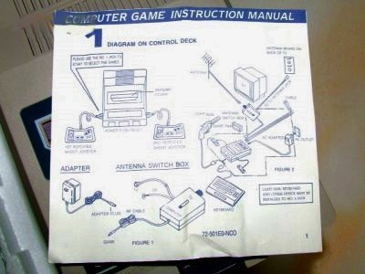
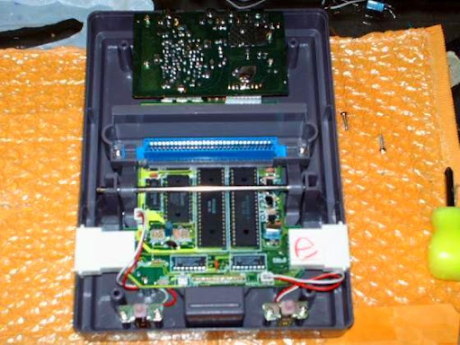
И еще один вариант IQ-501
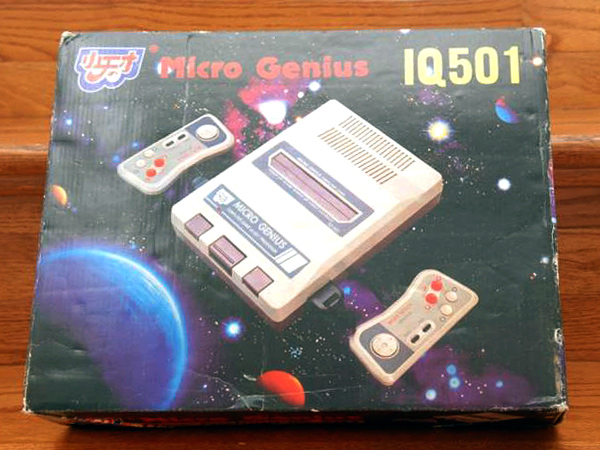
Другой моделью Micro Genius, которая получила распространение в России, стала IQ-502, известная у нас как Dendy Classic 2, а в Польше - как Pegasus. Некоторые ее вариации имели на геймпадах вход для наушников, на других же он отсутствовал, хотя значок на пластмассе явно свидетельствовал о том, что он должен был быть. Вероятно, это было сделано для удешевления производства, да и просто потому, что им всерьез никто не пользовался.
Micro Genius IQ-502
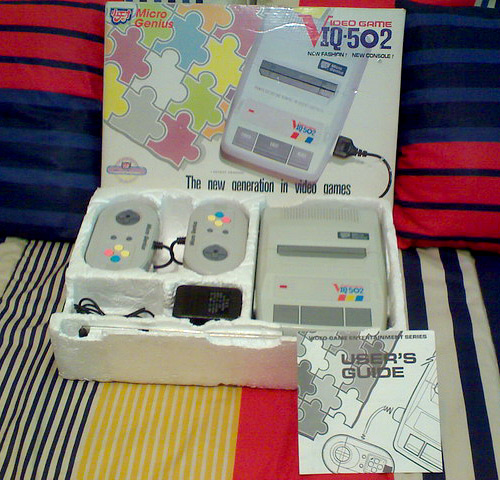
Польский Pegasus IQ-502
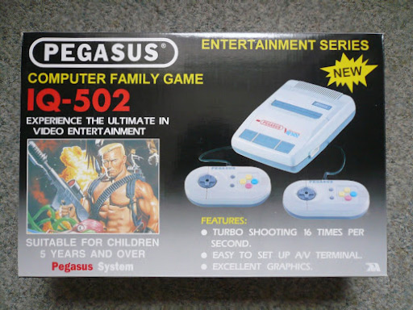
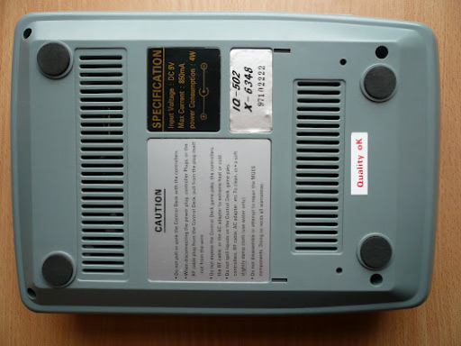
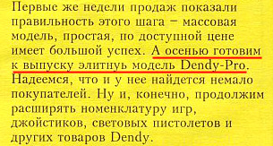На этом можно было бы и закончить описание приставок Micro Genius, известных в России под маркой Dendy, если бы не одно "но". В "Коммерсанте", а также в первом номере журнала "Видео Асс Денди" можно встретить упоминание о некоей приставке "Dendy Pro", позиционировавшейся как топовая модель:
"...модель Dendy Pro, по словам Виктора Савюка, составит достойную конкуренцию лучшим японским 8-разрядным приставкам по качеству изображения, звука, дизайну и возможностям. У этой модели связь приставки с телевизором будет беспроводной, один из джойстиков будет связан с приставкой посредством инфракрасных лучей, а другой — кабелем, но зато к нему можно будет подключить наушники."
Газета «Коммерсантъ» № 68(291) от 14.04.1993
Долгое время мне было непонятно, что за модель имеется в виду, так как на российском рынке она так и не появилась. Кто-то даже считал, что это 16-битная Dendy Pro 16 Bit. Но найдя в сети фотографии Micro Genius IQ-1000, я понял, что речь могла идти только о ней. Почему ее так и не стали ввозить - понять в принципе можно. Фирменные приставки Dendy и так стоили дороже, чем другие китайские клоны, и вряд ли еще более дорогая модель имела бы успех, так как технические преимущества ее были не столь значительны.
Micro Genius IQ-1000 - невышедшая Dendy Pro
полный мануал IQ-1000 (zip, 3 Мб)
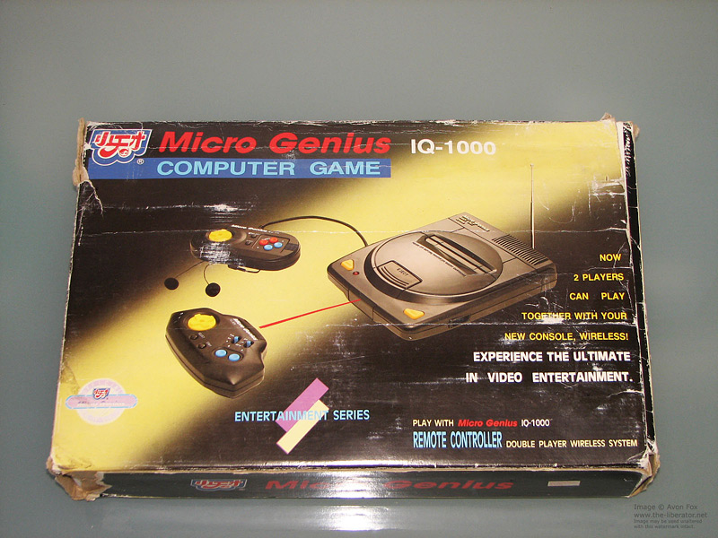
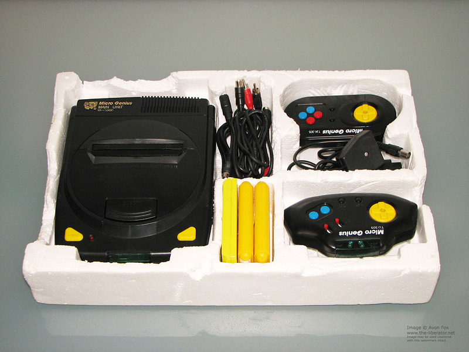
еще фото
Под маркой Micro Genius выходило также еще несколько интересных приставок, но ни одна из них, правда, так и не стала "Dendy".
Поэтому здесь я ограничусь одним перечислением:
Micro Genius IQ-200

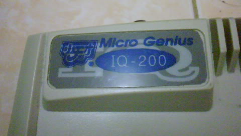
Micro Genius IQ-201
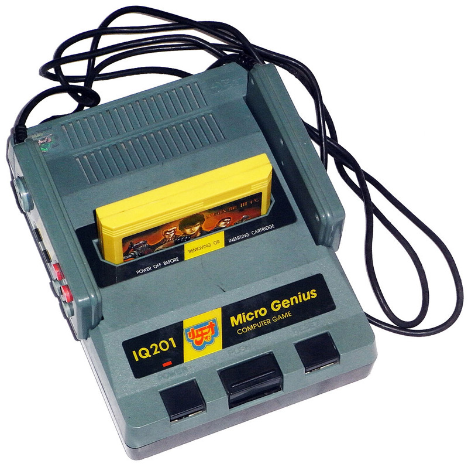
Micro Genius IQ-301
 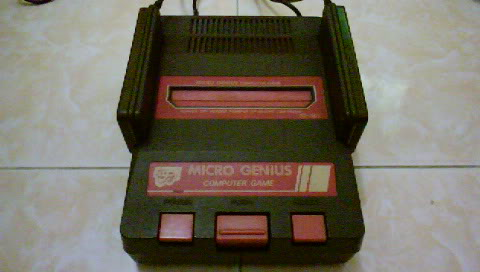
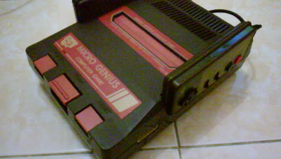
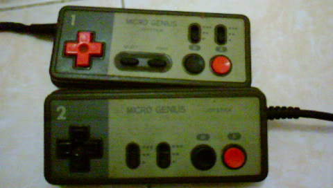
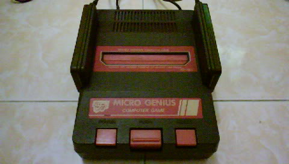
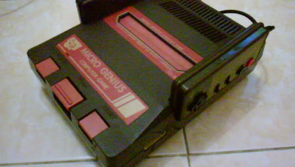
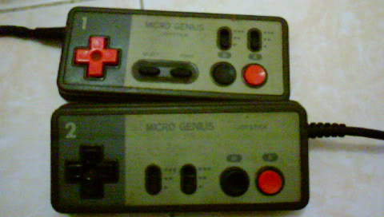
Micro Genius IQ-701

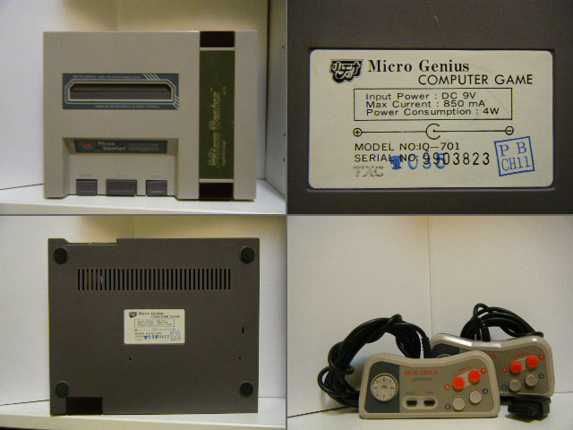
Micro Genius IQ-901
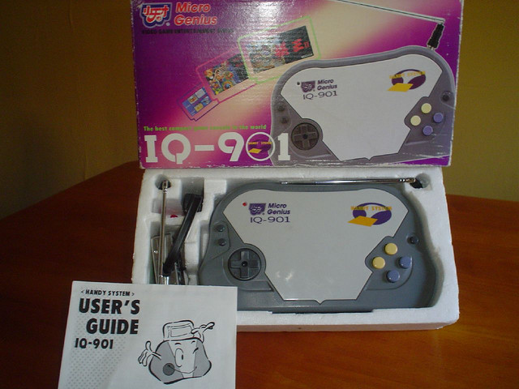

Micro Genius IQ-2000
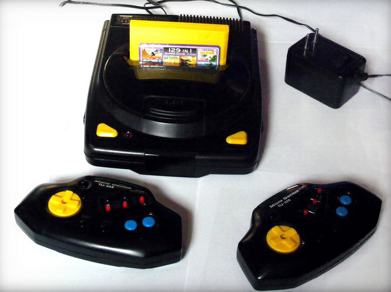
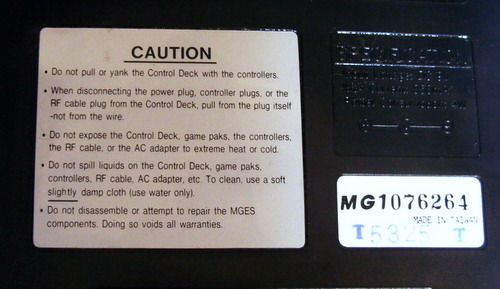
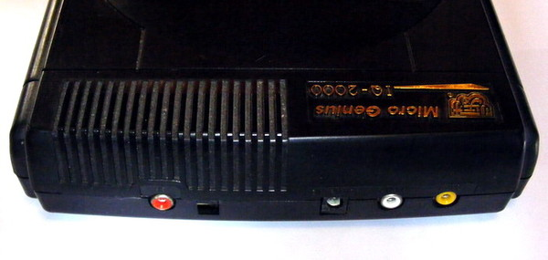
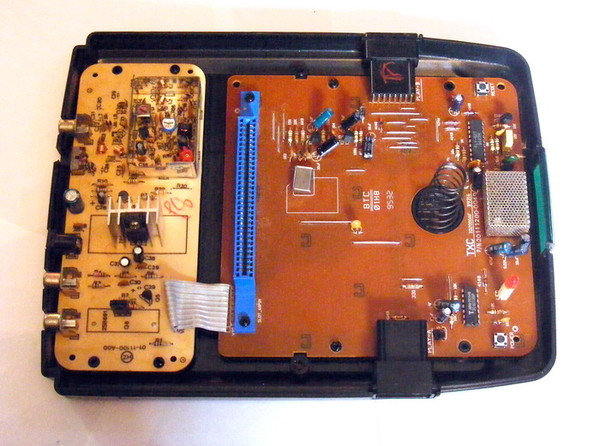
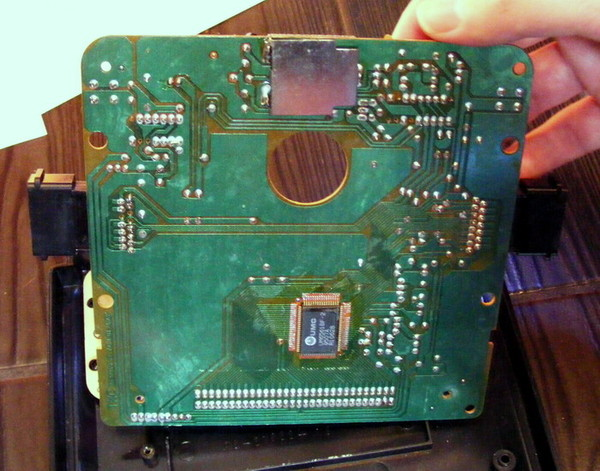
Хотя среди модельного ряда приставок Micro Genius не удалось найти прототипа Dendy Junior, на некоторых, возможно только ранних (93-94гг.), «Джуниорах» можно обнаружить логотипы Micro Genius на боковой части слота
Dendy Junior производства Micro Genius
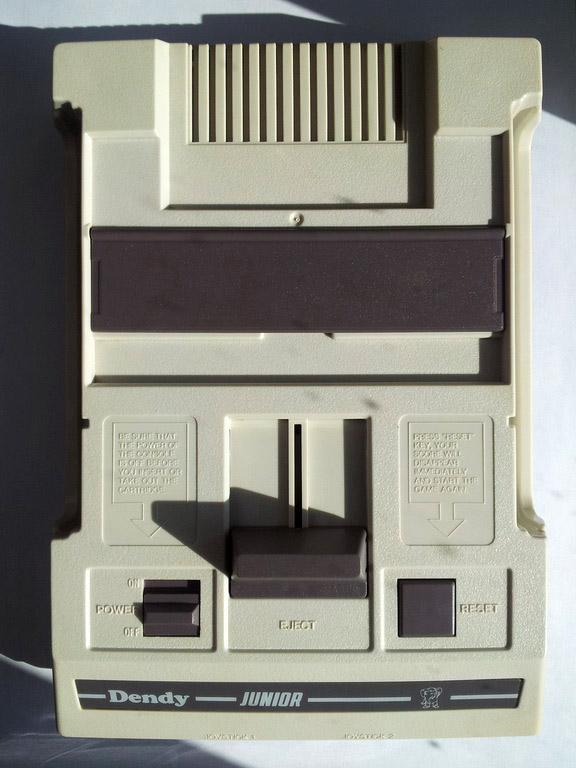
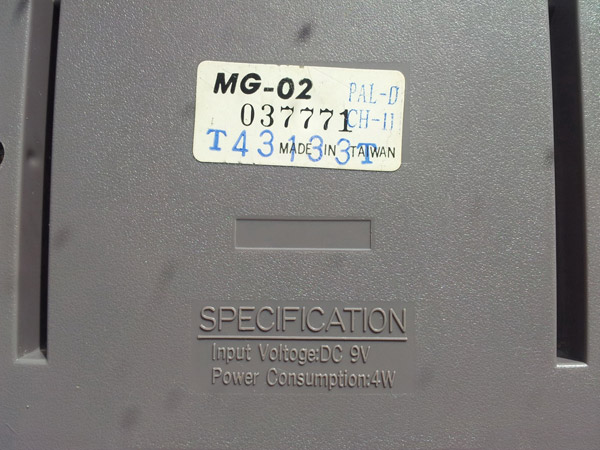
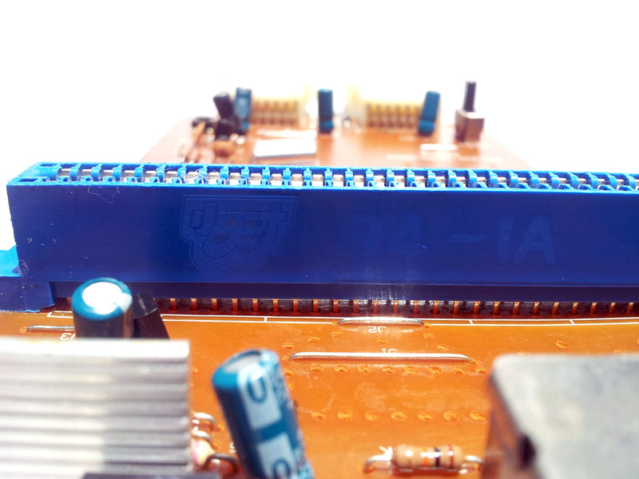
(фото предоставил Дмитрий Гриневич)
еще фото
Другой вариант Dendy Junior производства Micro Genius
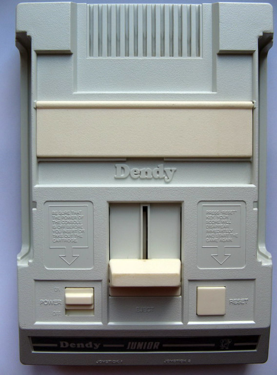
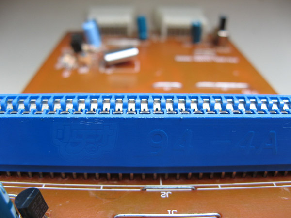
(фото предоставил Дмитрий Гриневич)
еще фото
 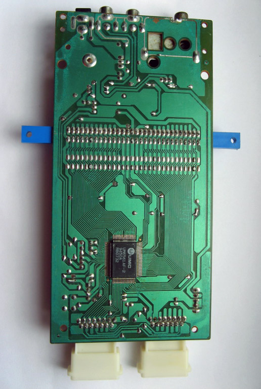
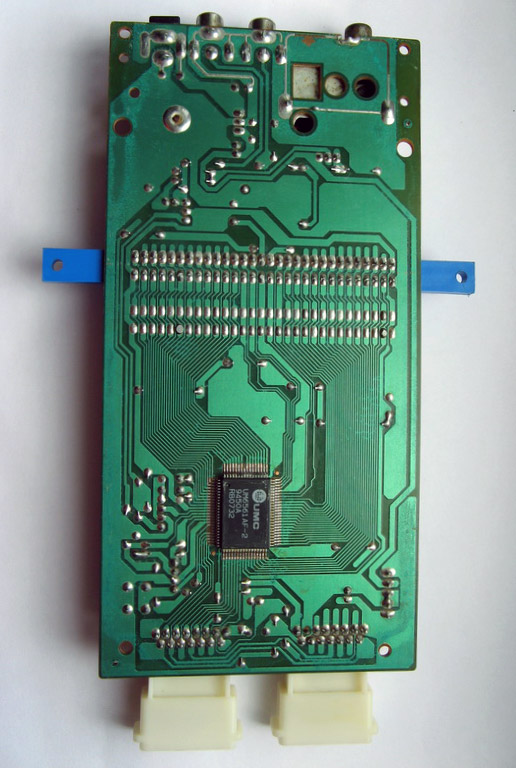
{kind=link}